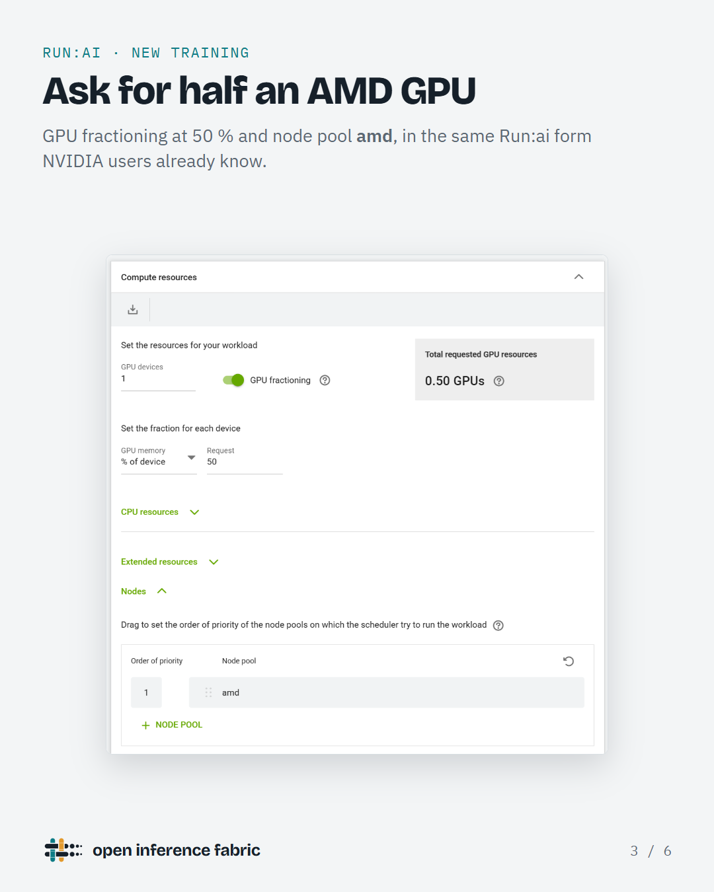
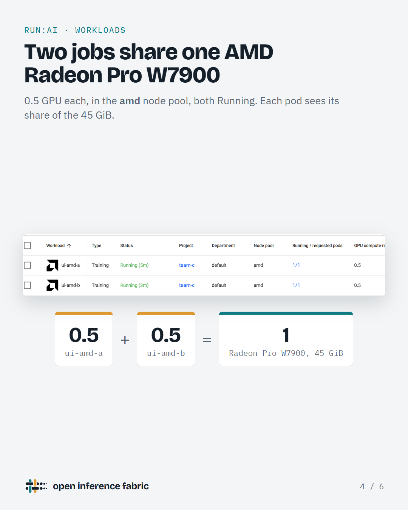
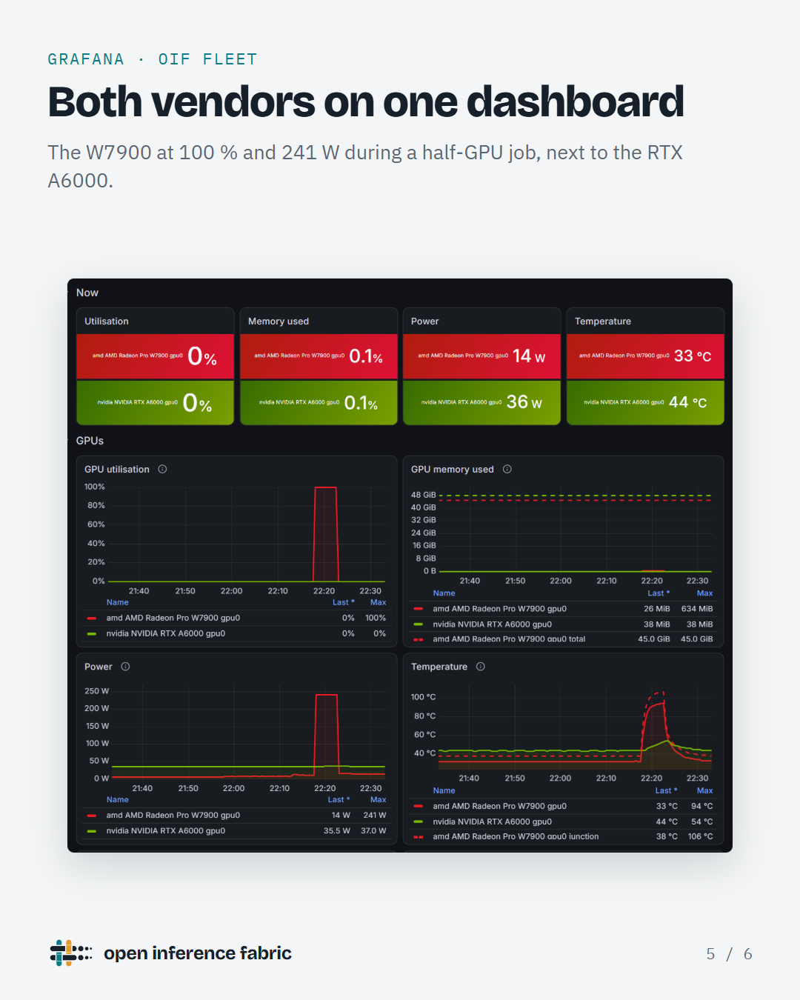

Open Inference Fabric turns GPU servers into one open-source platform to schedule, serve, benchmark and observe language models. One installer, every step tested on real hardware and documented.
sudo ./oif install builds the platform layer by layer. Every change it makes to a host is recorded, and oif uninstall takes it back out.
Requests enter through one OpenAI-compatible endpoint and reach a Dynamo worker on either vendor. Jobs describe what they need, a model and a number of GPUs, and OIF picks the vendor; Run:ai and the KAI Scheduler then place them. Both land on the same GPU nodes: NVIDIA, AMD, or both in one server.
When NVIDIA open-sourced Run:ai in October 2026, its GPU inventory, interface and GPU fractions were built for NVIDIA. OIF adds AMD: GPUs in the node inventory, a node pool and quota per vendor so a CUDA job never lands on an AMD GPU, and fractional AMD GPUs. Two workloads can share one Radeon Pro W7900 at half a GPU each, with soft memory isolation for trusted teams.



The orchestration platform is built and tested: Run:ai on NVIDIA and AMD, a highly available multi-node cluster, and jobs that ask for GPUs without naming a vendor. Now: the v0.1 test on a clean server with both GPUs. Next: serving with Dynamo on both vendors, compared fairly, then one AI gateway with keys and budgets per team.
OIF patches are proposed upstream with lab evidence, so everyone running Run:ai, the KAI Scheduler or ROCm benefits. Every issue, pull request, discussion and comment, with live status, is on the upstream tracker; the plan behind them is in UPSTREAM.md.
| Open pull request | Change | State |
|---|---|---|
| KAI #2594 | scheduler: honour a required topology level above the job's lowest common domain | open |
| KAI #2557 | binder: do not modify the configured reservation pod resources | open |
| gpu-fractioning #175 | fractiond: limit AMD GPU memory with the dmem cgroup | open |
| run-ai #3949 | go-operator: report GPU fractions unavailable when the daemons have no target nodes | open |
| run-ai #3948 | frontend: AMD icon for workloads on ROCm images | open |
| kwok #1808 | docs: an AMD GPU nodes example | open |
Run the guides on NVIDIA, AMD or mixed GPU servers and tell us what breaks.
Read and test the open upstream pull requests above. Reviews help them land for everyone.
Go, Kubernetes, ROCm, CUDA or docs: start with CONTRIBUTING.md.